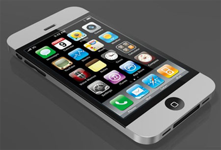

Càng đến gần tháng 9 (thời điểm được cho là diện thoại thế hệ mới của Apple sẽ xuất hiện), càng nhiều đồn đoán về sản phẩm này được lan truyền trên Internet
Chân dung hình ảnh iPhone 5 qua các tin đồn
Nhiễu tin đồn ngày ra mắt
Tuần này, hãng tuyển dụng Gekko(Anh) đã đăng một quảng cáo cho Apple rằng họ đang tìm kiếm " đội ngũ bán hàng iPhone có thể làm việc đến 5 ngày mỗi tuần, từ thứ 3 đến thứ 7, trong khoảng thời gian từ 16/8 đến 29/10 tại các của hàng bán lẻ chủ chốt".
Trang công nghệ CNet cho rằng Apple đang muốn nói ẩn ý về một sản phẩm lớn sắp được trình làng vào giữa tháng 8 và hứa hẹn nó sẽ được tiêu thụ mạnh tới mức họ cần huy động thêm nhân công trong tháng đầu.
Ngược lại, trang tin Trung Quốc Sohu lại làm rối trí người hâm mộ khi nói điện thoại thế hệ mới của Apple không thể xuất hiện sớm do chip lõi kép A5 quá nóng.Rất có thể hãng này sẽ trình làng trước phiên bản giá rẻ iPhone 4S trong mùa thu còn iPhone 5 sẽ đến vào đầu năm sau
Trước đó, báo Washington Post (Mỹ) cho rằng điện thoại Apple sẽ được bán ra trong tháng 9. Đây cũng là thời điểm được nhiều trang web cho là chính xác nhất.
Thiết kế iPhone 5
Apple nổi tiếng với những sản phẩm đẹp , kiểu dáng là đặc điểm mọi người quan tâm nhất khi đọc về iPhone 5. Smartphone này được cho là mỏng hơn, nhẹ hơn và dùng vỏ nhôm cũng như không có phím cứng(hoặc ít nhất, nó được trang bị phần mềm để người sử dụng gần như không cần dùng đến các phím đó nữa).
Doanh số
Báo Wall Journal (Mỹ) trích một nguồn tin nội bộ của Apple rằng hãng này lên kế hoạch đạt mục tiêu 25 triệu được tiêu thụ, iPhone 5 vào cuối năm. Mẻ hàng đầu tiên được xuất xưởng sẽ khoảng vài triệu model cũ.
Camera
iPhone 5 có camera mặt sau 8 megapixel, 2 đèn Flash LED và camera phía trước cho video chat. Một tin đồn "điên rồi" khác là iPhone 5 được trang bị camera 3D sau khi Apple đã đăng ký bản quyền tại Mỹ hồi cuối tháng 3 liên quan đến một hệ thống có thể chụp, xử lý và hiển thị hình ảnh 3D nhờ các thiết bị phần cứng tích hợp camera đôi.